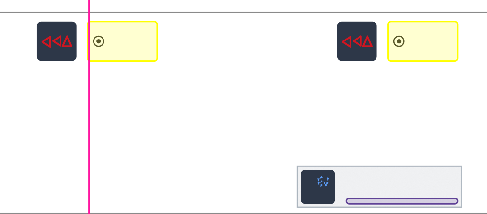
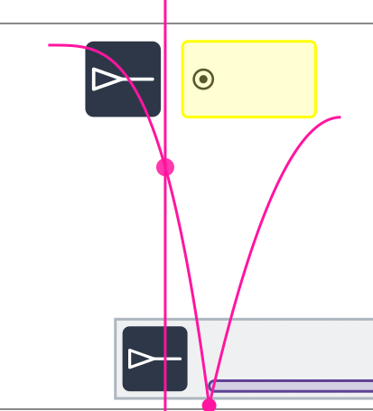
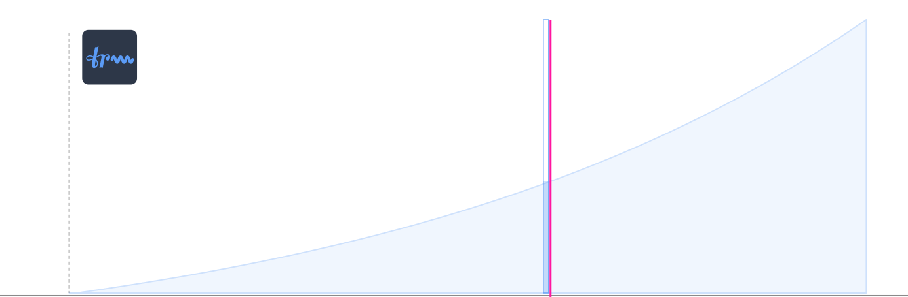
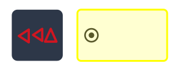
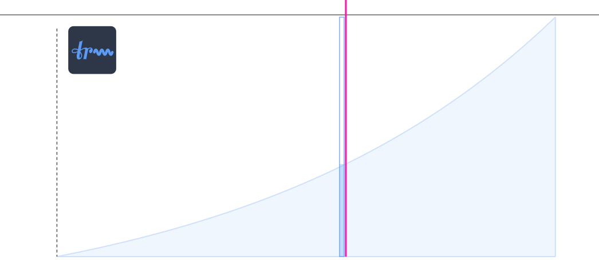

The score for Approaching is in a computer-animated digital format. It is accessed and played like an online video game through a web browser.
Demo Recording with Score-Following Video: https://youtu.be/EMYu62G8KiM
Bass flute, bass clarinet, percussion, viola, cello, electronics.
Percussion: crotales (bowed), cymbals (bowed). The rest of the instruments are chosen at the player's discretion.
The full score is in C. Parts will be transposed.
There are a number of animated conduction tools that are intuitive to follow and aid performers in realizing the score.
A scrolling cursor runs throughout the piece at a consistent speed and indicates when things are to be played. Notation is spaced proportionally in time — distance on the page equals duration.
Bouncing-ball conductors aid with rhythmic precision.


Gradient Curves. This score uses graphic curves to describe continuous change over time. An animated curve follower appears alongside the cursor and gives the real-time position in the curve.

This composition employs a version of Anthony Braxton's Language Music.
Short Attacks
Trills
Accented Long Tones
Multiphonics
Audible Beats: For this musical material, the live electronics will generate sine tones at specific pitches, and the performer can generate audible beating against these sine tones using small glissandos around the unison.
Scattered Strikes: Scattered strikes is an ensemble language type. The ensemble will produce a clustered impulse within a short time frame, like a tossed handful of pebbles hitting the ground.
The use of language music is notated in different ways. A yellow box indicates playing this language type in the time window.

A language type with a gradient curve indicates playing that language type following the gradient of the curve. In the pictured example, the curve would represent trill intensity. This could be a combination of speed and volume, and any other parameters a performer might use to develop a gradient of trill intensity.
